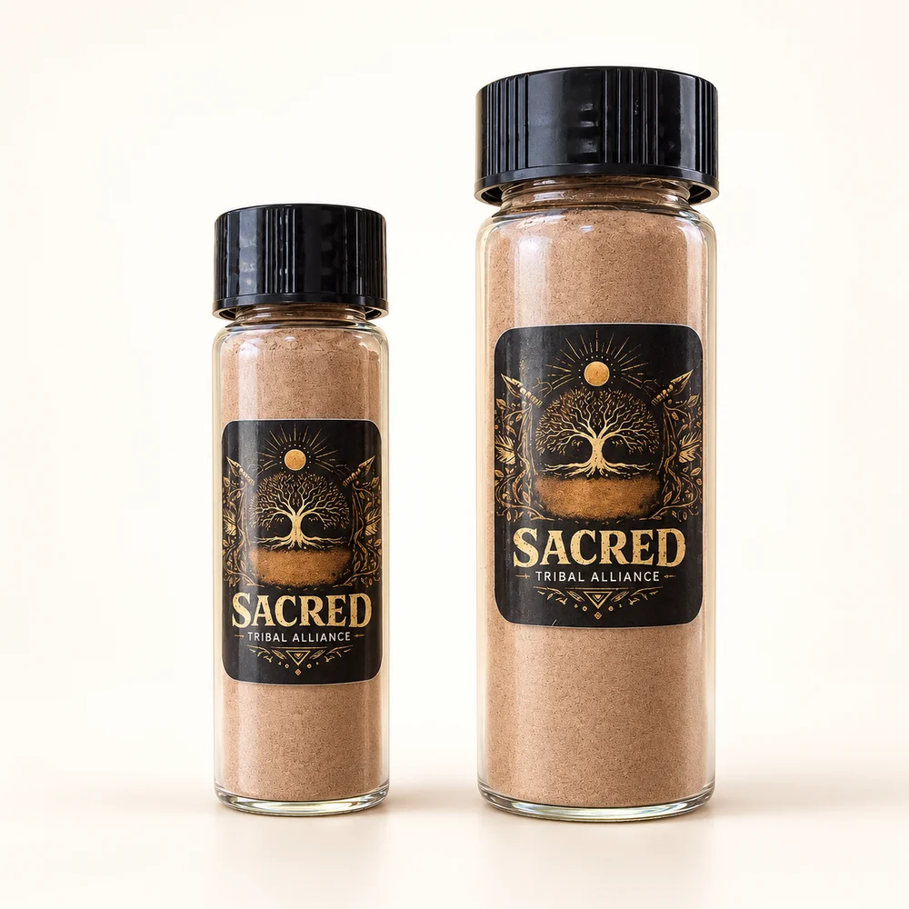

Sacred Tribal Alliance
Traditional medicines.
Fair access.
Respectful sourcing.
We work directly with Amazonian plant medicine traditions — connecting people to Hapé, Sananga, and other plant materials through honest conversation, careful sourcing, and genuine reciprocity with the communities these medicines come from.
Get in Touch
Medicines
Hapé, Sananga, and other traditional plant materials — sourced with care, offered by inquiry only.
Explore medicinesSourcing
Every material comes with a conversation about where it came from, who harvested it, and how it was prepared.
Our approachReciprocity
Access to these medicines carries responsibility. We explain how what flows out connects back to the people and places it came from.
How access works